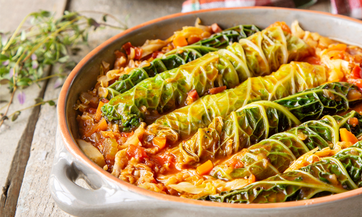

Ingredients
- Fresh sausages
- Savoy cabbage
- Tomato (diced)
- Onion (minced)
- Tomato pulp
- Olive Oil
- Salt and Pepper
Instructions
- Clean the cabbage and trim the stalks. Pick the biggest leaves and boil them for about 6 minutes. The remmaining leaves cut in julienne and reserve.
- Brown the sausages in a deep pan with the olive oil for about 10 minutes. Take the sausages of to a plate and reserve.
- Add the onions to the pan in medium heat until they are translucid and then add the tomato, salt and pepper and let it cook. Meanwile wrap each sausage with one of the big cabbage leaves and use a toothpick to hold the wrapping.
- Now add the tomato pulp and mix it well, then add the wrapped sausages and the jullienne cut cabbage. Turn the heat to minimum and let it took for about 30 minutes (Until the cabbage is tender).
Done!
It is now ready to be served. If you don't mind the extra carbs you can serve it on top of white rice.